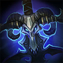

Arthas
Welcome to our Arthas guide for Heroes of the Storm. Here you will learn everything you need to know in order to play Arthas in a competitive environment, whether you play on your own or with a team.
Howling Blast Build
| Level 1 | Level 4 | Level 7 | Level 10 | Level 13 | Level 16 | Level 20 |
|---|---|---|---|---|---|---|
The Howling Blast Build relies heavily upon Arthas' multiple Movement Speed Slows and his ability to root his opponents with his W. The ensuing synergy with Shattered Armor Icon Shattered Armor at Level 13 enables him to make several enemy Heroes more vulnerable to Arthas' own and his teammates' damage.
Bruiser Build
| Level 1 | Level 4 | Level 7 | Level 10 | Level 13 | Level 16 | Level 20 |
|---|---|---|---|---|---|---|
|  |
Arthas' Bruiser Build focuses on aggressive talents like Eternal Hunger Icon Eternal Hunger and Frostmourne Feeds Icon Frostmourne Feeds, which allow him to deal significant damage against single targets. However, it is important to highlight that we do not recommend picking this Build if there is no other dedicated Tank in your team.
Go Back